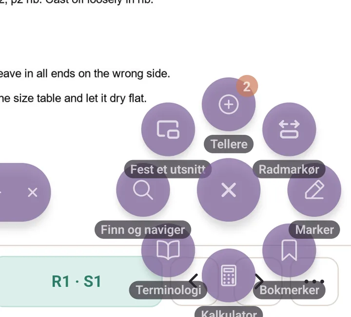
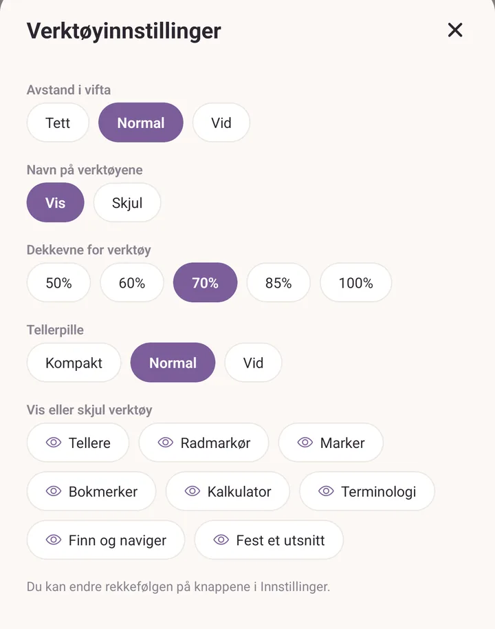
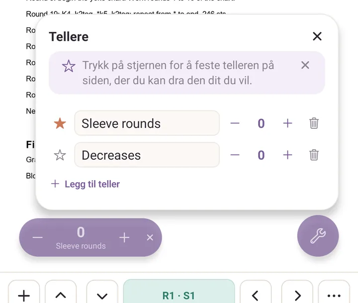
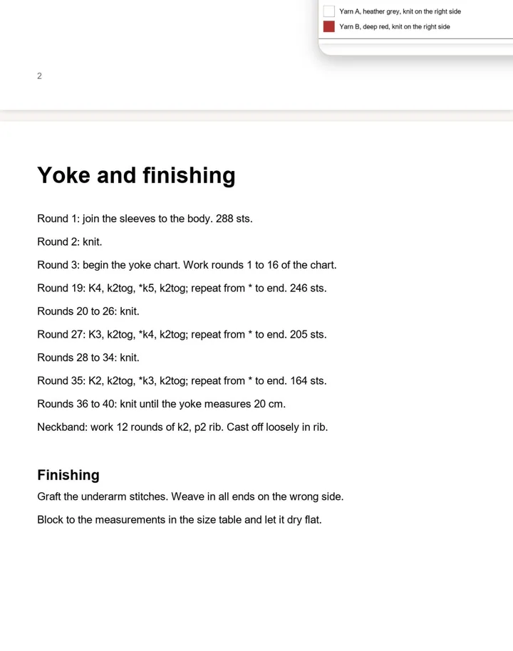

PDF-verktøy
Den flytende knappen i PDF-leseren, og alt som ligger bak den. Dette er det skjermbildet i Purl som har flest funksjoner, med god margin.
Den flytende knappen
Trykk på den runde flytende knappen, så vifter åtte verktøy seg ut rundt den, hvert med navnet sitt under:
- Tellere for enkle tellere du kan parkere på siden.
- Radmarkør for båndet som følger raden du er på.
- Marker for penn, tusj, viskelær, velg og linjal.
- Bokmerker for bokmerker og notatlapper.
- Kalkulator, Terminologi, Finn og naviger, Fest et utsnitt.
Alle åtte er på fra start. Trykk på et verktøy for å bruke det, trykk på knappen igjen for å lukke vifta.

Dra knappen hvor som helst på skjermen, så blir den der, i denne oppskriften og i den neste.
Hold den inne et halvt sekund for å åpne Verktøyinnstillinger:
- Avstand i vifta: Tett, Normal eller Vid.
- Navn på verktøyene: Vis eller Skjul navnene under knappene.
- Dekkevne for verktøy og størrelsen på Tellerpille.
- Vis eller skjul verktøy: trykk på et verktøy for å ta det ut av vifta. Minst ett blir igjen.
Rekkefølgen på knappene endres i Innstillinger, tannhjulet øverst i Mer, under Knapper i PDF-hurtigmenyen.

Bare ett verktøy. Skjul sju av de åtte, og den flytende knappen slutter å være en vifte: den blir det ene verktøyet, med ikonet sitt, ett trykk unna. Nyttig hvis du bare bruker radmarkøren.
Tellere
Tellere åpner et lite panel. Legg til teller legger til en, og du skriver navnet over plassholderen. Pluss og minus teller den opp og ned.
Trykk på stjernen ved siden av en teller for å beholde den på siden som en svevende pille, og dra så pillen dit den er ute av veien. Dette er delen de fleste går glipp av: uten stjernen finnes telleren bare inne i panelet.
Setter du Standardtellere i Innstillinger, legges de navnene inn automatisk første gang du åpner tellerpanelet i en ny oppskrift.

Tellere uten en oppskrift
Tellerne over hører til oppskriften du leser. For å telle noe som ikke har en oppskrift under seg, en rapport, rader mellom økninger, dager med adventsstrikking, finnes det et eget verktøy: Mer, og så Tellere under Verktøy.
Det virker på den samme måten. Legg til en teller, gi den et navn og et valgfritt mål, og trykk minus og pluss for å telle. Holder du inne en av dem, fortsetter den å telle, fortere jo lenger du holder, så å ta igjen tjue rader tar et øyeblikk i stedet for tjue trykk. Dra i håndtaket på et kort for å endre rekkefølgen.
Radmarkør
Radmarkør legger et markørbånd på tvers av siden. Første gang åpner arket Sporere i stedet, fordi det ikke er noe å følge ennå. Det rommer to knapper for å legge til, Radteller og Diagram, og lister opp alt du allerede har laget for denne oppskriften. Plusstegnet til venstre på sporingslinjen åpner det igjen, så du kan bytte mellom en teller og et diagram når som helst.
Dra båndet ned på raden din. På linjen: pilene opp og ned går rad for rad, de to knappene til høyre for radnummeret gjør båndet lavere eller høyere, hengelåsen låser båndet så du ikke dytter det ut av stilling, og de tre prikkene åpner Tellervalg (Lås, Radpåminnelser, Slett teller).
Trykk på radnummeret for å åpne Teller:
- Tellernavn og Gjeldende rad.
- Mål, så telleren leser 24 / 60.
- Tell med, for annenhver eller hver fjerde rad.
- Tell ned, for å vise rader som gjenstår i stedet for rader gjort.
- Snu retningen, som teller opp når du flytter båndet den andre veien. Det er det du vil ha for et diagram som leses nedenfra og opp.
Radpåminnelser slår opp et banner på en rad du velger. Legg til påminnelse, og så Ved en rad for en engangs eller Hver N. rad for å gjenta.
Diagramsporing
Diagram i arket Sporere slipper en boks ned på siden. Dra i hjørnene eller midten for å passe den over et trykt diagram, og knip og dra siden under for å sikte den inn, og trykk så Ser bra ut.
Arket Diagramsporing spør så etter Masker bredt og Rader, og etter Starthjørne der rad 1, maske 1 begynner. Rader veksler retning er for strikking frem og tilbake. Vis rutenett tegner svake rutelinjer over diagrammet når du har zoomet nok inn til å se dem. Trykk Lagre rutenett.
Linjen leser R1 · S1 med den gjeldende ruten opplyst og hele raden dens uthevet. Pilene på siden går maske for maske, pilene opp og ned går rad for rad, og avlesningen sier Ferdig på den siste ruten. Trykk på avlesningen for å åpne Gå til posisjon og hoppe til hvilken som helst rad og maske.
Det samme arket tilbyr senere Juster boksen, Dupliser dette diagrammet og Fjern diagram. En oppskrift kan romme så mange diagrammer du vil, hvert med sitt eget navn.
Marker
Marker åpner én rad med ikonknapper: tusj, penn, viskelær, velg og linjal til venstre, angre, gjør om og Ferdig til høyre. En farget stripe under det aktive verktøyet viser fargen dets.
Trykk på et verktøy to ganger for å åpne valgene: farger, Størrelse, og for tusjen Dekkevne. Med lav dekkevne er tusjen en markeringstusj.
Forvalg. De tre runde chipsene øverst i en penns valg rommer hver sin hele penn: verktøy, farge, størrelse og gjennomsiktighet. Trykk på en chips for å bytte til den. Hold en chips inne for å lagre den pennen du har nå i den. De kommer ferdig satt opp som en gul markeringstusj, en rosa tusj og en rød penn.
Hold for en perfekt form. Tegn, og hold så fingeren stille: en strek retter seg ut og låser seg vannrett eller loddrett når den er nær, en grov ring blir en jevn oval, en løkke med hjørner blir en pen boks. Fortsett å bevege deg mens du holder for å justere, løft for å beholde.
Viskelærvalg (trykk to ganger på viskelæret) bytter mellom Hele streken og Del av streken, og rommer Fjern tegninger…, som spør Bare denne siden eller Alle sidene før den visker ut noe som helst.
Velg tegner en løs løkke rundt noen merker og setter dem i en boks sammen. Dra boksen for å flytte dem alle, eller Slett for å fjerne dem. Valgene tilbyr Frihånd eller Boks.
Linjalen har sin egen modus, og dette overrasker alle: én finger langs linjalen tegner en strek, to fingre flytter oppskriften. Dra den dit du vil ha den, roter den med håndtaket i hjørnet, og strekene fester seg til linjen dens.
Én finger tegner. To fingre drar. Én finger hvor som helst ellers ville tegnet et strøk du ikke ville ha.
Bokmerker og notater
Bokmerker åpner Bokmerker og notater, som lister alt du har merket i denne PDF-en. Trykk på en oppføring for å hoppe dit.
- Sett bokmerke her merker der du er, uten at du må skrive noe.
- Plasser notat ber deg så trykke på siden der du vil ha det. Skriv notatet og lagre. Det finnes ingen egen notatlapp-knapp i vifta: notater begynner her.
Trykk på markøren til et notat for å redigere det, og dra den for å flytte den. Et notat kan vise teksten sin rett på siden i stedet for som en markør: åpne det og velg Tekst på siden, eller Nål for å gå tilbake til en markør. Et notat du lar stå tomt er rett og slett et bokmerke.
Finn og naviger
- Sideminiatyrer: en filmstripe med hver side, den gjeldende med omriss.
- Gå til side: trykk på sidetelleren og skriv et tall.
- Søk i oppskriften: hvilken som helst tekst, listet med litt sammenheng rundt. Aksenter spiller ingen rolle, så "Jarbo" finner "Järbo".
- Nattlesing: mørke sider, lys skrift. Tegningene dine beholder fargene sine, og valget følger med til neste oppskrift.
Fest et utsnitt
Ram inn tegnforklaringen, en størrelsestabell eller en fellerekke og trykk Ser bra ut. Den svever i et lite vindu som blir stående mens du blar.
Dra vinduet etter toppfeltet, endre størrelse fra hjørnet nede til høyre, og bruk pilen i toppfeltet for å folde det sammen til en smal pille. Trykk på toppfeltet uten å dra for å hoppe tilbake til stedet det ble rammet inn, noe Purl spør om først. Inntil fire per oppskrift, og de kommer tilbake neste gang du åpner den.
Mens du rammer inn, er det bare hjørnehåndtakene og grepet i midten som tar imot fingeren din, så siden drar og kniper fortsatt under.

Kalkulator og Terminologi
Kalkulator åpner seks verktøy: Rask regning, Strikkefasthet fra prøvelapp, Masker og rader for en bredde, Tilpass en oppskrift til din fasthet, Felling / utvidelse jevnt fordelt og Nøster du trenger. Se Kalkulator.
Terminologi åpner ordlisten i oppskriftens håndverk, for når en "sl1, k2tog, psso" må pirkes opp midt i en rad. Se Terminologi.
Flytte deg rundt på siden
- Bla med fingeren.
- Knip for å zoome. Knip enda lenger ut for en oversikt over flere sider og trykk på den du vil ha.
- Trippeltrykk hvor som helst for å stille zoomen tilbake til sidebredde.
Det som lagres
Tegninger, notater, bokmerker, radmarkører, tellere, diagramsporinger, festede utsnitt og blaposisjonen din kommer alle tilbake nøyaktig slik du forlot dem når du åpner oppskriften igjen.
Innstillinger som endrer PDF-leseren
Innstillinger er tannhjulet øverst i Mer.
Under Standardvalg:
- PDF-standardvalg: Standardverktøy, Tusjstørrelse, Pennstørrelse, Linjal på som standard, Radmarkør på som standard.
- Hold skjermen våken: skjermen står på mens en oppskrift er åpen, så den ikke blir mørk midt i en rad. På fra start, og verdt å vite om før du skylder på enheten din.
- Standardtellere: navn som legges inn automatisk i en ny oppskrift.
Under Verktøyoppsett: Dekkevne for verktøy, størrelsen på Tellerpille, og Knapper i PDF-hurtigmenyen for rekkefølgen og listen over hva som vises og skjules.
Under Avansert: PDF-fargepalett, de seks fargene som tilbys i tegneverktøylinjen.
Se også
- Les en oppskrift: veiledningen i tre omganger.
- Oppskrifter: hvordan PDF-er kommer inn i biblioteket ditt.
- Sikkerhetskopier og gjenoppretting: merknadene dine blir med i en sikkerhetskopi.